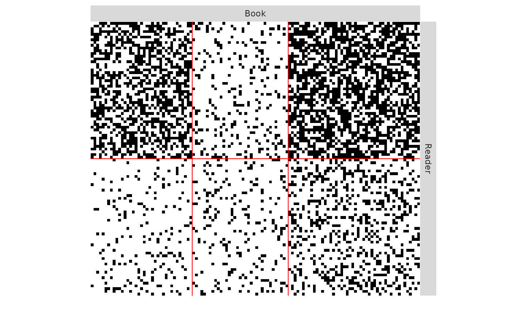

Sampling of Bipartite SBMs
sampleBipartiteSBM.RdThis function samples a simple Stochastic Block Models, with various model for the distribution of the edges: Bernoulli, Poisson, or Gaussian models, and possibly with covariates
sampleBipartiteSBM( nbNodes, blockProp, connectParam, model = "bernoulli", covariates = list(), covariatesParam = numeric(0) )
Arguments
| nbNodes | number of nodes in the network |
|---|---|
| blockProp | parameters for block proportions: list of size two with row and column block proportions |
| connectParam | list of parameters for connectivity with a matrix of means 'mu' and an optional matrix of variances 'sigma2', the sizes of which must match |
| model | character describing the model for the relation between nodes ( |
| covariates | a list of matrices with same dimension as mat describing covariates at the edge level. No covariate per Default. |
| covariatesParam | optional vector of covariates effect. A zero length numeric vector by default. |
Value
an object with class BipartiteSBM_sampler
Examples
### BIPARTITE SBM ## Graph parameters nbNodes <- c(100, 120) blockProp <- list(c(.5, .5), c(1/3,1/3,1/3)) # group proportions connectProb <- matrix(runif(6), 2, 3) ## Graph Sampling mySampler <- sampleBipartiteSBM(nbNodes, blockProp, list(mu = connectProb)) plot(mySampler)mySampler$rMemberships() # sample new memberships mySampler$rIncidence() # sample new incidence matrix plot(mySampler)